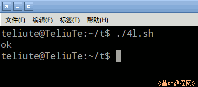
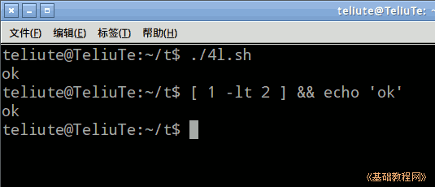
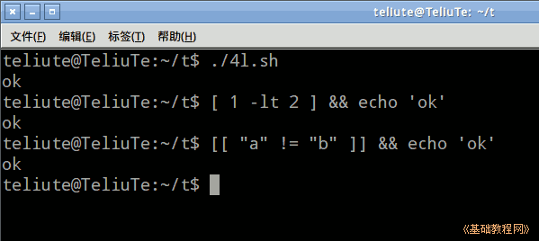
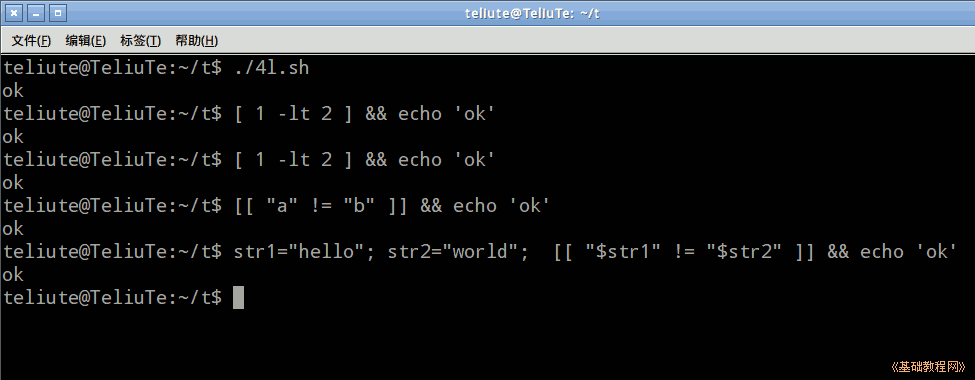
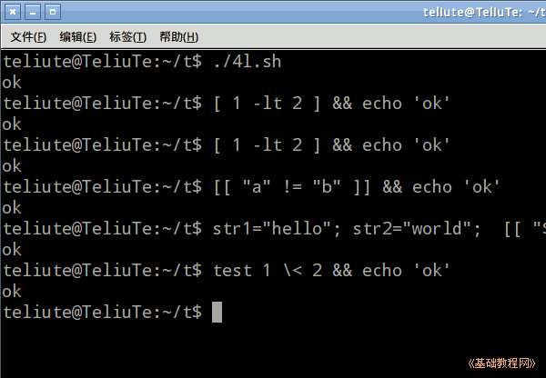
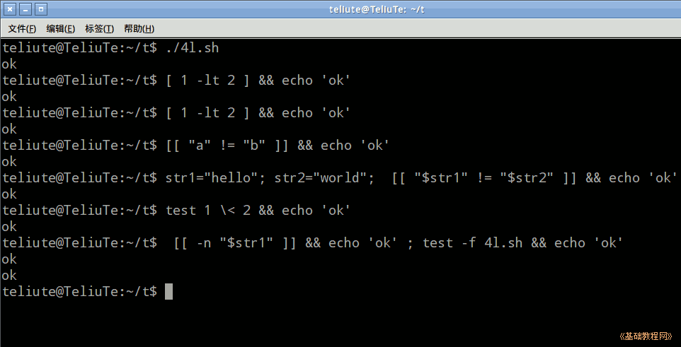

Bash Shell 脚本编程基础
作者：TeliuTe 来源：基础教程网
四、逻辑运算 返回目录 下一课逻辑运算是对一个条件进行测试得出真或假，从而进行相应的处理；
1、逻辑运算
1）启动文本编辑器gedit，输入第一行 #!/bin/bash ，保存文件为 4l.sh，并设置可执行权限；
2）比较两个数的大小，可以用>、<、==、!=，输入一行 ((1<2)) && echo 'ok' ，两个与号&&是起连接作用，当左边的命令执行结果为真或正常结束时，就会继续执行右边的命令；
保存运行，可以看到显示ok，可以自己试着改成别的数字

3）除了用这些符号外，还可以用字母表达式来运算，-gt 、-lt、-eq 、-ne ，逻辑与 -a ，逻辑或 -o 基本都是单词的缩写，继续输入一行 [ 1 -lt 2 ] && echo 'ok' ，注意每个之间都有空格分隔；
保存运行，可以看到显示ok，大于号小于号不能直接用在单方括号命令里，但是可以用在双方括号命令里；

4）字符串比较一般用双方括号和大于号小于号等符号，输入一行[[ "a" != "b" ]] && echo 'ok' ，用单方括号时需要加个反斜杠转义 \>、\<；
保存运行，!= 是不等于的意思，字符串用双引号括起来；

5）如果用字符串变量，也要用双引号引起来，输入一行 str1="hello"; str2="world"; [[ "$str1" != "$str2" ]] && echo 'ok'
保存运行，$符号可以提取变量的值，即使在双引号中也可以；

6）test 命令也用于判断，输入一行 test 1 \< 2 && echo 'ok'；
保存运行，这里的小于号，需要用反斜杠转义；

7）几个常用的判断操作符，-z 是字符串为空，-n 是字符串不为空， -f 文件存在，输入 [[ -n "$str1" ]] && echo 'ok' ; test -f 4l.sh && echo 'ok'
test 命令和方框命令是等同的，可以根据需要灵活使用；

8）更多详细可以参考shell手册中的相关内容，下载本课范例；
本节学习了逻辑运算的基础知识，如果你成功地完成了练习，请继续学习下一课内容；
本教程由TeliuTe制作|著作权所有
基础教程网：http://teliute.org/
美丽的校园……
转载和引用本站内容，请保留作者和本站链接。